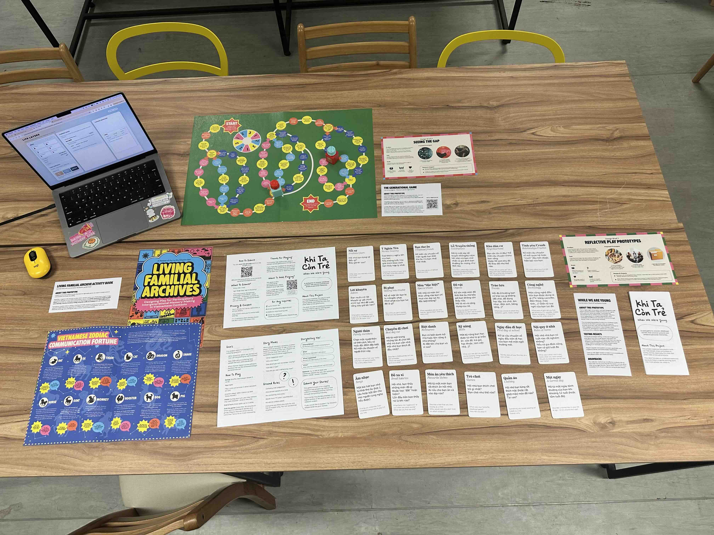
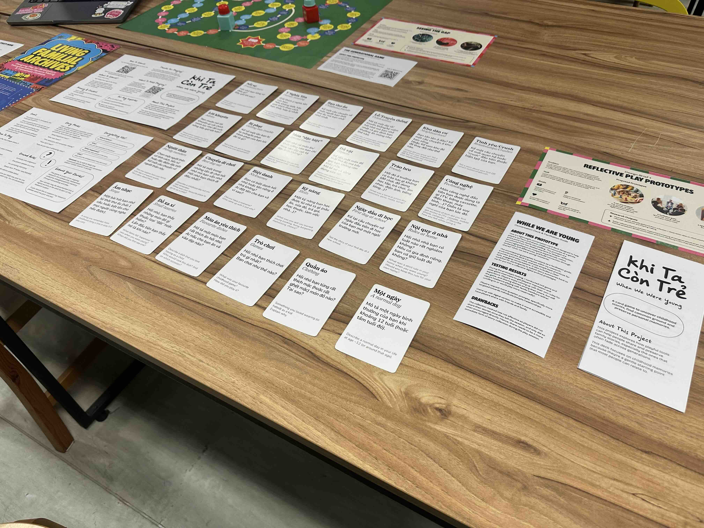
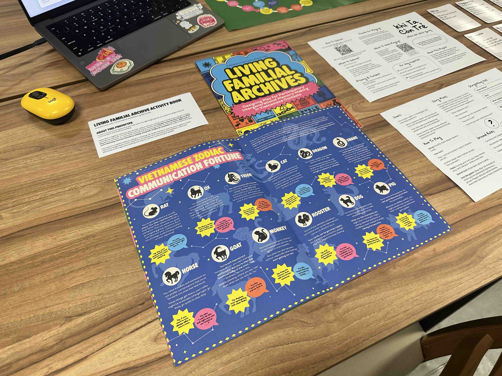
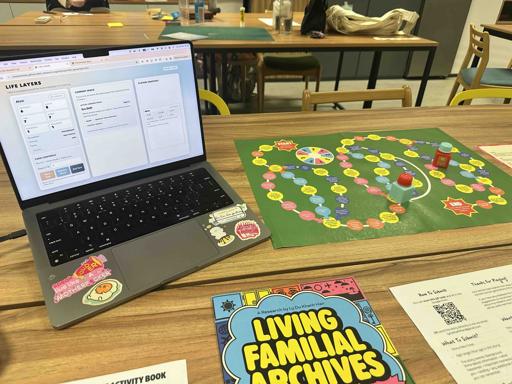
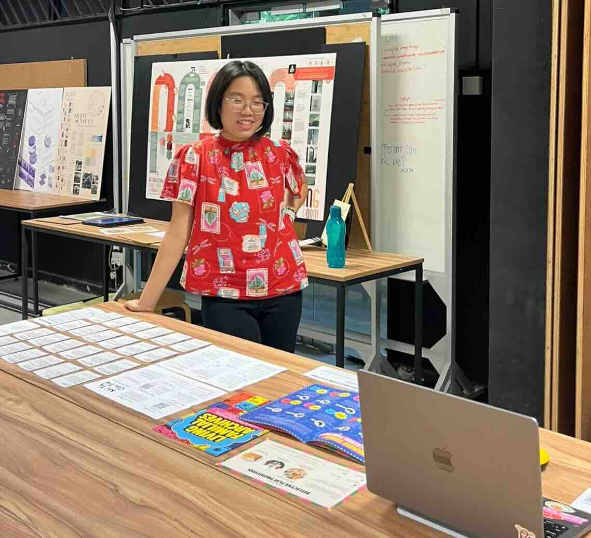

Activities
- Preparing prototype display for Formative Feedback
- Implementing feedbacks for future directions
- Continue brainstorm and development of prototypes
Reflection
For this week, I tried putting up a good display of my work, and it dawned on me how challenging but important it really is to display my research outputs nicely, as I was not very happy with how it looked it the end, and I would need to start planning my display for the WIP showcase at the end of the semester.

For this week, I presented the card games that I developed and tested, the activity book that is now a supplementary reading material to all the other prototypes, and my board game in its first draft.



During the Formative Feedback, one of the most interesting note I received from my supervisor is that the prototypes are looking promising but I can explore many different more types of games/playful prototype as currently, my games are still quite reminiscing classical board game types, and target direct conversations primarily.

So, I can try developing prototypes that tests different target audiences and see how they can illicit conversations from these groups with different dynamics. Fueled by this feedback, I began plans to develop the remaining ideas of prototypes that I had, which includes a game targeting a smaller pair dynamic and one that involves more playful interaction and less rule following.
Literature This Week
Tasks
- Develop the existing prototypes based on feedback from this week.
- Purchase equipment needed to develop more prototypes
- Consider user testing for all prototypes.